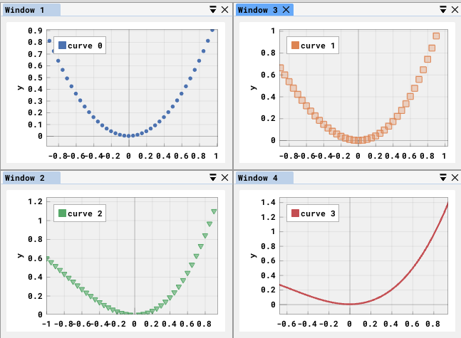
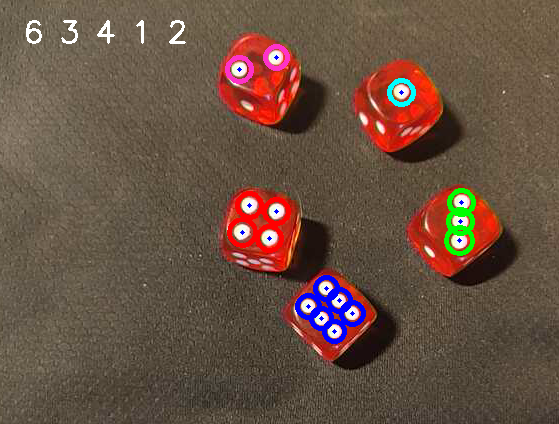

My Work

FGA - Fast Graphing & Analysis Software is a data analysis software aim at students and scientists. It allows the user to draw curves on graphs and do analysis on them such as derivative, fourier transform,

Realtime Perlin Noise Visualizer is a desktop application to visualize the effect of several parameters of the famouse PerlinNoise algorithm. Noise is generated in realtime in 1D 2D or 3D.

Realtime Dice Detection is a python script that can detect faces of real dice throught a smartphone camera.

ProTomuss - College’s grades is a software aim at student of my university. The software display university marks in a more attractive way than the official website.

Minimisation is a program used to test multiple minimisation algorithms with the purpose of solving the travelling salesman problem.
About Me

Passionné de développement informatique, je prépare un master de physique à l’université de Lyon afin de d’obtenir une double compétence informatique / physique. Je me forme en autodidacte depuis plus de 5 ans sur des languages comme C++ ou Python mais aussi sur les languages du web comme HTML, CSS, Javascript. J’ai travaillé sur des logiciels comme arduino, unity ou labview. A travers les projets que je réalise, j’aime allier le domaine scientifique à l’informatique.